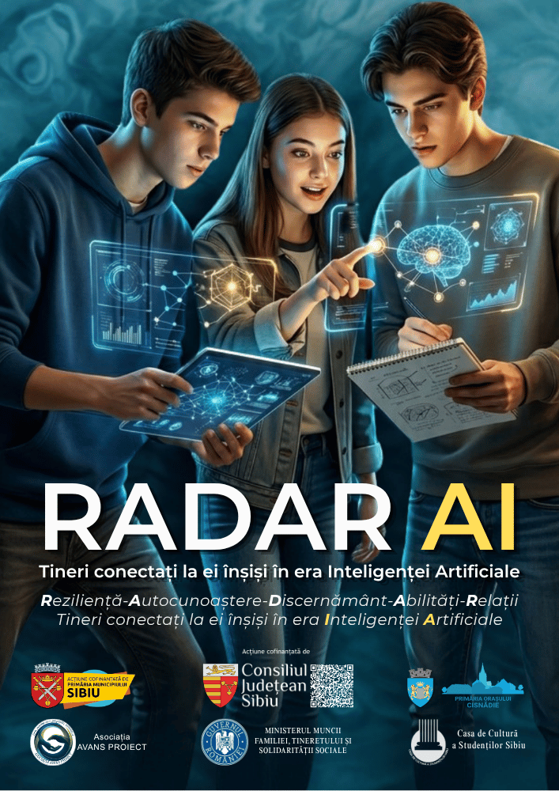

✍️ Blog AVAPRO
Articole și perspective
Gânduri despre educație, inteligență artificială, comunitate și dezvoltarea resurselor umane — scrise de echipa Asociației Avans Proiect.
 🤖 Educație & AI
🤖 Educație & AI
Inteligența Artificială — impactul asupra educației
Cum schimbă instrumentele AI modul în care elevii învață și gândesc critic.
 🤝 ONG & Societate
🤝 ONG & Societate
Rolul ONG-urilor în dezvoltarea resurselor umane performante
De ce ONG-urile ajung acolo unde sistemul formal nu poate ajunge singur.
 🎓 Misiune
🎓 Misiune
AVANS PROIECT — liant între educație și piața muncii
Extindem misiunea: distanța dintre bancă și primul loc de muncă trebuie construită activ.

🚀 ProgrameDe la alfabetizare digitală la cetățenie activă
Ce am învățat construind RADAR AI și ACTIV AI, și încotro mergem.
🏫 Parteneriate
Parteneriate educaționale în Sibiu
Nicio instituție nu rezolvă singură problemele educației. Cum arată o colaborare reală.